RECIPES • PLAN • PANTRY • TOGETHER
Testing with friends · Not on Google Play yet · How to get it ↓
A recipe box, dinner planner, shopping list and pantry for your household, starring an onigiri who is fine, actually.
Everything lives on your own phone: no cloud, no company servers, and we never see your recipes. Not even Nonna's prized marinara. Especially not Nonna's prized marinara. Sharing with the people you live with? Run a little server at home (a Raspberry Pi or an old PC will do).
What it does (besides screaming)
- Save recipes from anywherePaste a link, share one straight from your browser, or type in Grandma's by hand. Bentotachi skips the blogger's life story and keeps the recipe.
- Shelves and tagsDesserts, one-pot, "things we make when we're sad": sort recipes onto shelves and tag them however you like.
- Dinner planPlan the week's dinners and finally settle "didn't we just have that?" Bentotachi remembers what you last had, and when, from your plan or the "We cooked this" button. It's an app, not a psychic. It isn't watching you eat.
- Shopping listTick a recipe's ingredients and they hop onto one list the whole household shares. It even works in the supermarket's no-signal corner.
- PantryKnow what you've got before buying a fourth jar of cumin. Scan barcodes, see what's running low, and leave notes like "3 packets, DO NOT BUY MORE".
- Cook with itTick off steps as you go, time how long a recipe really takes (not the "ready in 20 minutes" lie), and mark what you cooked.
- Yours to keepFree, and staying free: no subscriptions, no ads, no sign-up, no tracking. Back it up whenever you like, or pack your recipes into a Paprika file and take them elsewhere. We won't cry. (We might scream a little.)
Getting Bentotachi
Bentotachi is a small household project, currently being tested on friends (who agreed to this, mostly). It isn't on Google Play yet.
It's an Android app that works all by itself on your phone. Sharing with your household? It can also connect to a small server (PocketBase) on a computer at home, and the README on GitHub walks you through it.
How it's made
I make Bentotachi with a lot of help from AI. Claude (Anthropic's AI) helped write the code. Ben, the lettering and the other artwork started as ChatGPT images that I directed, picked and refined into the finished pieces. The rest of The Koi Pond, my friends Deci and Chai, keep me honest: they said two flowers was a bit much (fixed) and that the riceball looks demented (staying demented). The ideas, decisions and testing (on my own household) are human.
Feeding the developer
I made Bentotachi for my household, because every recipe app wanted a subscription, my data, or both. All I wanted was somewhere to keep our damn recipes. So it's free, there are no ads, and I'll never put features behind a paywall.
That said: I'd love to claim I enjoy being poor, but Ben screams enough for both of us. If Bentotachi saved you from a fourth jar of cumin and you've got a dollar or two spare, it'd genuinely make my day.
Optional, forever. No perks, no guilt, no nagging.